How to use this guide
Read Part 1 once to understand the idea. Use Part 3 when you want to know what a button does. Jump to Part 4 for your type of business – it explains real situations step by step. Keep Part 5 handy for your daily routine and "what if…" questions.
📘 Part 1 – Understand it
What the assistant does, how it works, what your customers see.
🚀 Part 2 – Get started
Log in, set up in 5 steps, test, go live and share your QR code.
🖥️ Part 3 – Every screen
Home, Orders, Appointments, Chats, Customers, Products, AI assistant, Menu buttons, Integrations, Languages, Settings – with pictures.
🏪 Part 4 – Your business
Clinic, mart, cafe, pharmacy, salon, gym, coaching, services, real estate – what happens, what to do.
Understand it
Your WhatsApp assistant in simple words.
1. What your WhatsApp assistant does
It is like a smart receptionist on your WhatsApp number that never sleeps. Customers message you, and it replies instantly with buttons they can tap – then it takes their order or booking, answers common questions, and calls you whenever a person is needed.
⚡ Replies in seconds
Even at 11 pm on a Sunday. Customers don't go to a competitor because nobody answered.
🛒 Takes orders
Catalogue, cart, address, payment (cash, UPI, online) – the order lands in your dashboard with a beep.
📅 Books appointments
Shows only free times, never double-books, and reminds people so they actually come.
🔁 Follows up for you
Aftercare tips, "how are you feeling?", Google review requests, "your next visit is due".
❓ Answers questions
Timings, fees, location, parking, delivery area – your answers, sent instantly.
👤 Hands over to you
"Talk to us" pauses the bot so you or your staff can chat personally.
🤖 Understands anything
With the AI assistant, it answers any question from your price list, menu, policies and website – in the customer's language.
🌐 Speaks their language
English, Hinglish, हिन्दी and ગુજરાતી. Each customer can choose; reminders follow their choice.
📊 Fills your sheet / CRM
Every lead, order and booking can go straight into Google Sheets, HubSpot, Airtable and more.
2. How it works – the simple loop
1 · Customer says "Hi"
Scans your QR code or messages your number.
2 · Bot replies instantly
Buttons: Order, Book, Questions, Talk to us.
3 · Customer taps
Picks items or a free time – no typing needed.
4 · You get alerted
Dashboard beep + WhatsApp alert on your phone.
5 · You tap once
"Payment received", "Out for delivery", "Visit done"…
6 · Customer is updated
Automatically, on WhatsApp.
Things that happen by themselves, without anyone typing:
- Booking confirmations with your address and map link.
- Reminders 1 day and 2 hours before appointments – customers can confirm, change or cancel with one tap.
- Order updates when you move an order forward.
- Thank-you and care instructions after a visit, a check-in a few days later, and a review request for happy customers.
- "Time for your next visit" reminders (for example 6-month dental cleaning, monthly haircut).
- A gentle reminder to customers who left items in their cart.
The two places you work
📱 WhatsApp (your phone)
You receive alerts: new order, new booking, new enquiry, "a customer wants to talk to you", "a patient is not feeling well".
🖥️ The dashboard (website)
Where you see and manage everything: orders, appointments, chats, customers, products, bot messages and settings. Works on computer, tablet and phone.
3. What your customers see
Here is a real conversation from the built-in tester – exactly what a patient sees when booking at a dental clinic:
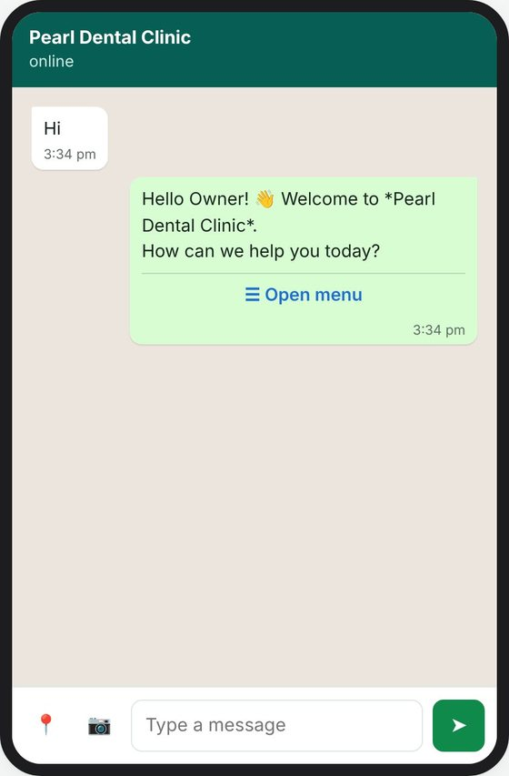
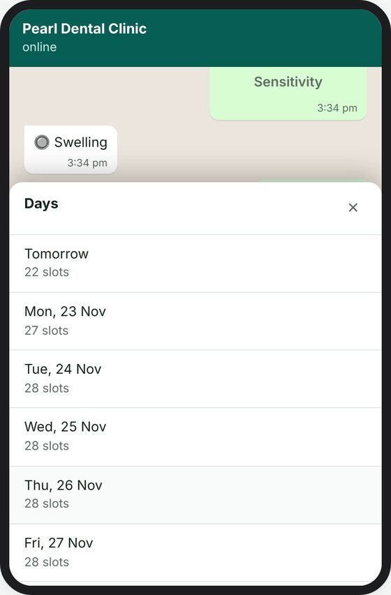
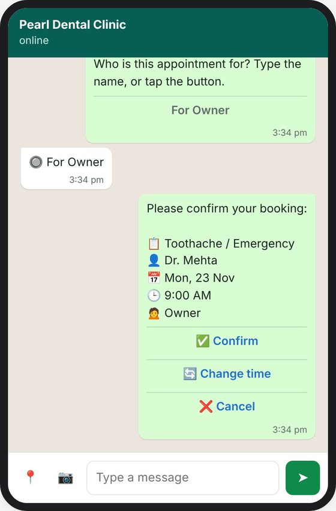

And a shop order – choose a category, an item, the quantity, then checkout:
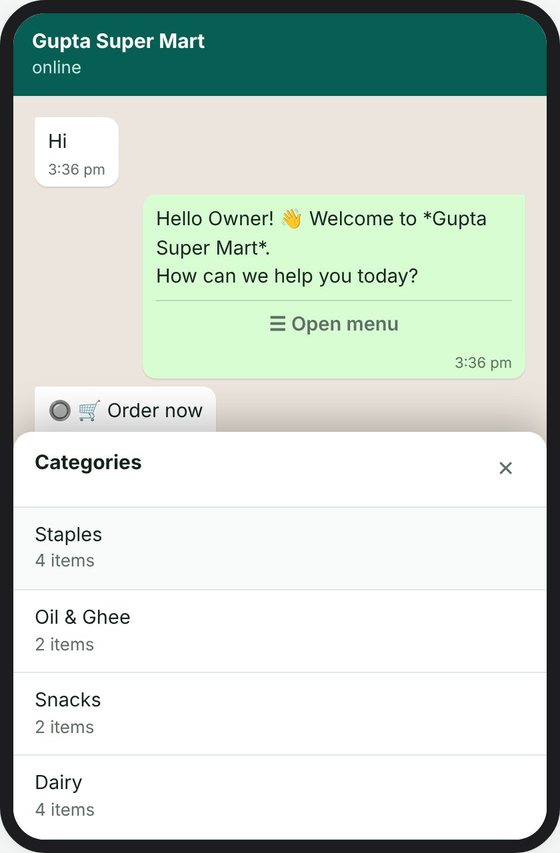
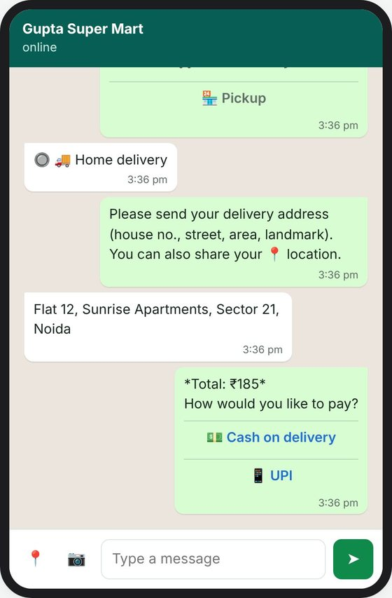
Customers can choose their language, and tap your own buttons such as Price list or Today's offers:
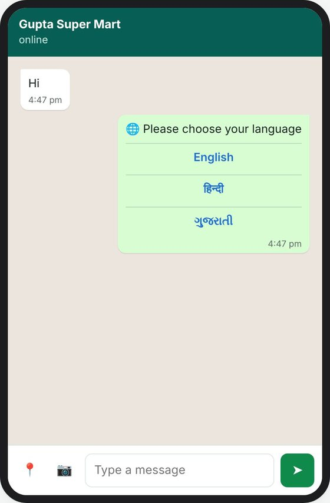
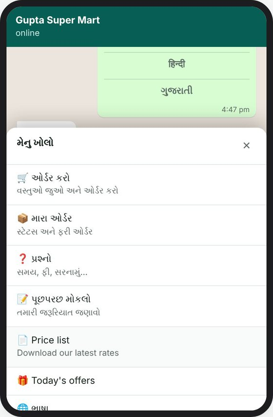
Get started
Log in, set up your business in 5 steps, test it yourself, then go live.
4. Logging in
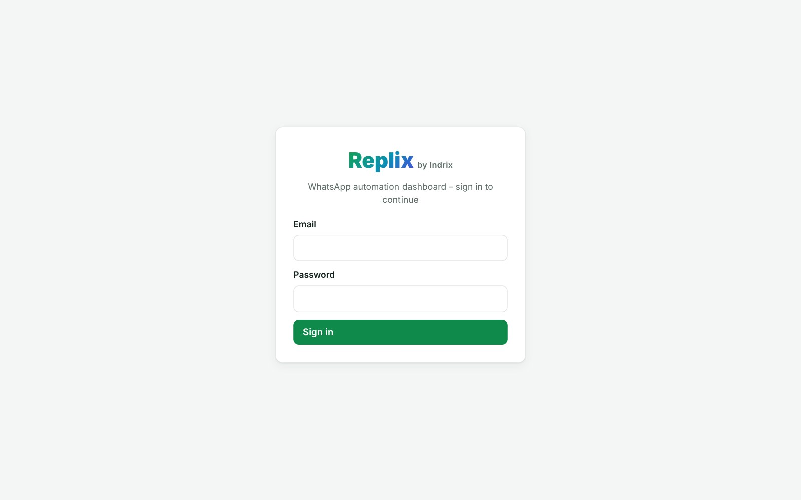
- Open the dashboard link you received (for example
https://bot.yourshop.com). - Type your email and password and click Sign in.
- On a phone, tap ☰ at the top left to open the menu.
5. First-time setup in 5 steps
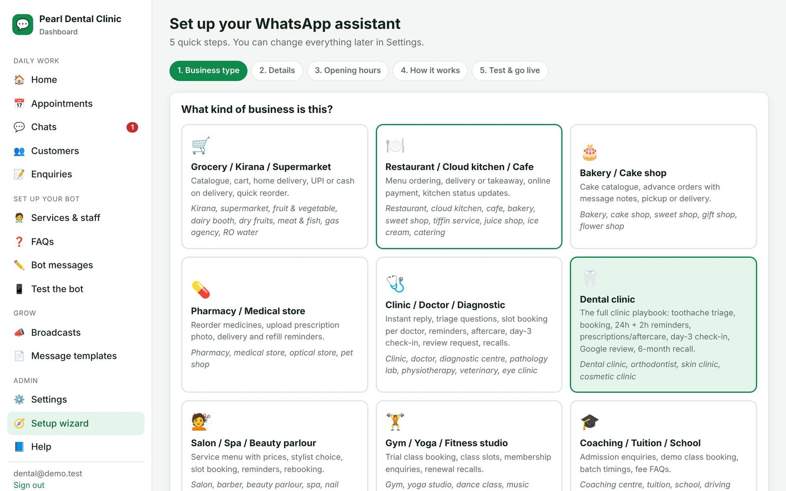
- Business type – Grocery, Restaurant/Cafe, Bakery, Pharmacy, Clinic, Dental, Salon, Gym, Coaching, Home services, Real estate, or Other. Keep "Add example products / services / FAQs" on to see how everything works – you can change or delete the examples later.
- Details – business name, owner WhatsApp number (alerts go here), address, Google Maps link, Google review link, bot language (English or Hinglish), time zone.
- Opening hours – switch each day on or off, set times, add a lunch break with "+ add break / 2nd shift".
- How it works – shops: delivery charge, free delivery limit, minimum order, payment options, UPI ID. Clinics/salons: slot length, days ahead, check-in day.
- Test & go live – a checklist of what is left. Click Finish setup.
You can reopen the wizard anytime from Setup wizard in the menu, and change every answer later in Settings.
6. Test it yourself before customers do
Open Test the bot. A phone appears on your screen – chat with your own bot exactly like a customer. Nothing is sent to real customers, and test orders/bookings are marked Test.
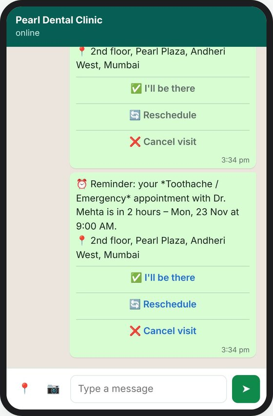
- Type messages or tap the buttons. 📍 sends a test location, 📷 a test photo.
- ⏩ Fast-forward time – reminders, check-ins and recalls for your test bookings are sent right now.
- 🗑 Reset test chat – start again (also removes test orders and bookings).
7. Going live and getting customers to message you
- Your WhatsApp number is connected by the person who set up your assistant (it needs a separate number that is not used on the normal WhatsApp app).
- Message templates are approved by WhatsApp (minutes to a day) – see section 23.
- Send "Hi" to your business number from your own phone. The menu should appear.
- On Home, click Download big QR (PNG). Print it.
Where to put your QR code and chat link
🧾 Bills and receipts
🛍️ Carry bags and boxes
💳 Visiting cards
🚪 Shop door
📍 Google Business Profile
👥 Society / community groups
The dashboard, screen by screen
What every page shows and what every button does. The menu only shows the pages your business uses.
8. Home
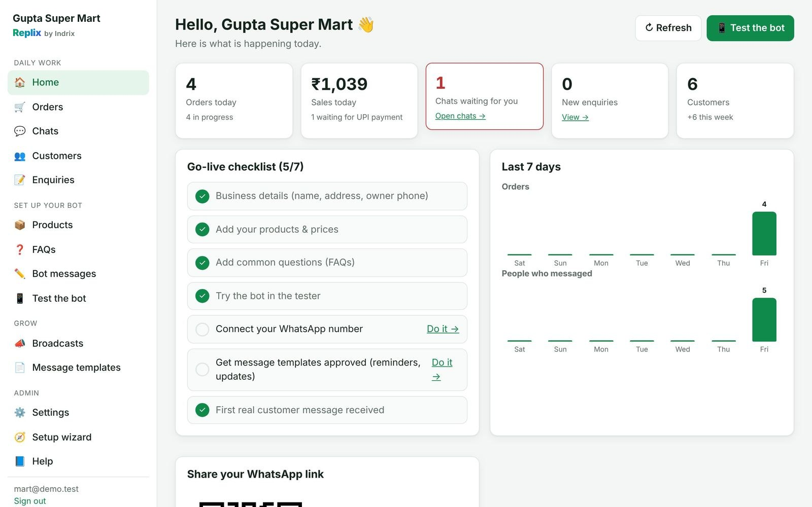
| Today's numbers | Orders, sales, appointments, no-shows, chats waiting for you, new enquiries, customers. |
| Red "Chats waiting for you" | Someone asked for a person, sent a photo/voice note, or is unhappy. Click Open chats. |
| Yellow "messages could not be delivered" | Usually a message template is still needed, or WhatsApp is not connected yet. Your setup person can fix it. |
| Go-live checklist | Everything needed to be fully live. Click Do it → next to anything without a tick. |
| Last 7 days | Small charts of orders, appointments and people who messaged. |
| Share your WhatsApp link | Your QR code, chat link and short link. Download big QR (PNG) for printing. |
9. Orders
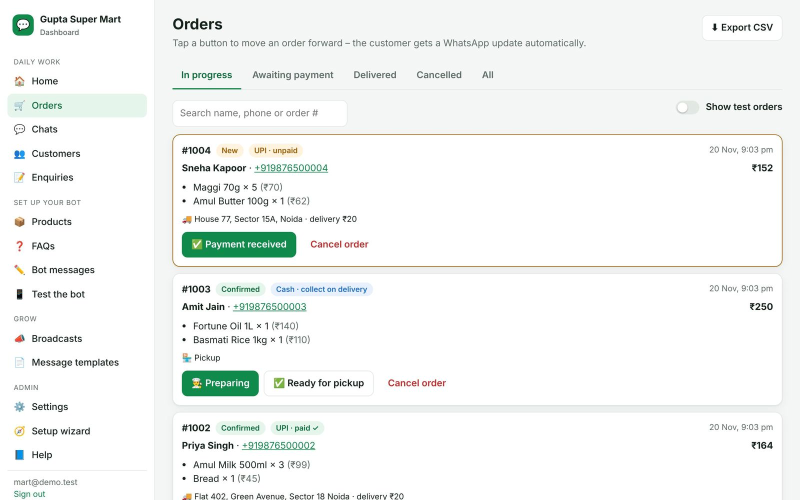
| Status | Meaning | Your action |
|---|---|---|
| New | Customer chose UPI/online and hasn't paid yet. | Check your bank / UPI app. When the money is there, tap ✅ Payment received. (Online Razorpay payments confirm by themselves.) |
| Confirmed | Paid, or cash on delivery. | Tap 👨🍳 Preparing when you start packing or cooking. |
| Preparing | Being packed / cooked. | Tap 🚚 Out for delivery or ✅ Ready for pickup. |
| Out for delivery / Ready | On the way, or waiting at the counter. | Tap 📦 Delivered / Collected. |
| Cancelled | You cancelled it. | The customer gets your reason. |
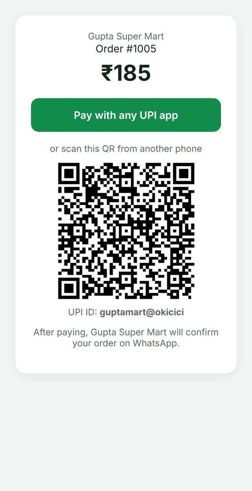
- Tabs: In progress, Awaiting payment, Delivered, Cancelled, All.
- Search by customer name, phone or order number.
- Cancel order asks for a reason – it is sent to the customer.
- Export CSV downloads all orders for Excel or your accountant.
- Show test orders shows orders you placed in "Test the bot".
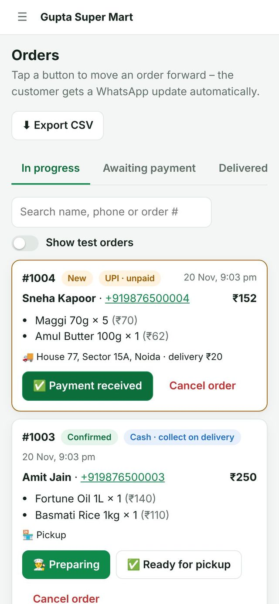
10. Appointments

| Button | When | What happens automatically |
|---|---|---|
| ✅ Visit done | After the visit. Optionally type a prescription or note. | Customer gets the aftercare message + your note. A "How are you feeling?" message and the next-visit reminder are scheduled. |
| Confirm | You called and confirmed. | Status → Confirmed (customers can also confirm from the reminder). |
| Move | Change date/time. | Customer gets "Your appointment has been moved to…"; reminders move too. |
| No-show | The customer didn't come. | Reminders and follow-ups stop; it counts in "No-shows" on Home. |
| Cancel | You must cancel. | Customer is told (with your reason) and invited to book again. |
| + New appointment | Phone calls and walk-ins. | Pick service, staff, date and a free time; the customer still gets confirmation and reminders on WhatsApp. |
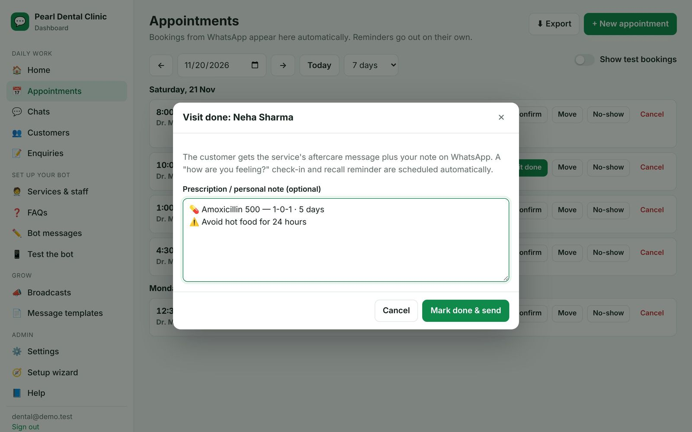
Use ← → to move between days, Today to come back, and choose 1 / 7 / 30 days to see more.
11. Chats
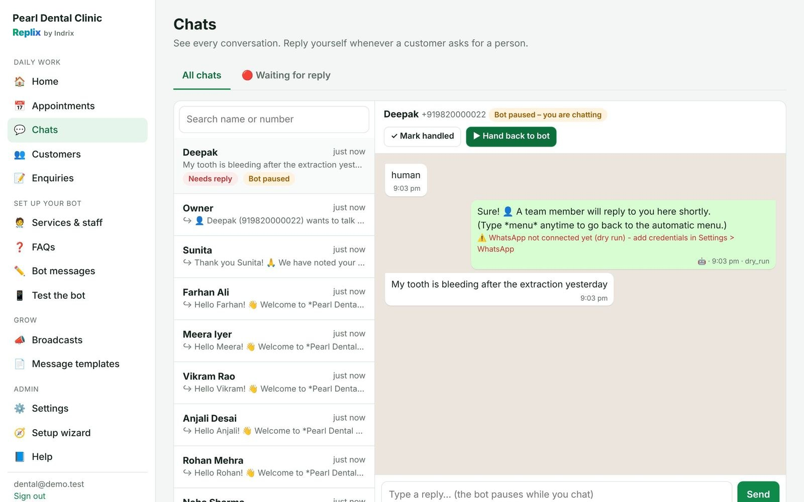
- 🔴 Waiting for reply tab – customers who asked for a person, sent a photo/voice note, or reported a problem.
- Type a reply and press Send. The bot pauses for that customer so it doesn't interrupt you.
- ▶ Hand back to bot when you are done. (It also comes back by itself after the quiet time – 12 hours by default – or if the customer types menu.)
- ✓ Mark handled – removes the red flag without replying.
- 📎 Open attachment – view photos, prescriptions, documents and voice notes customers sent.
- "More than 24 hours…" – WhatsApp only allows normal messages within 24 hours of the customer's last message. Wait for them to message again, or call them.
12. Customers
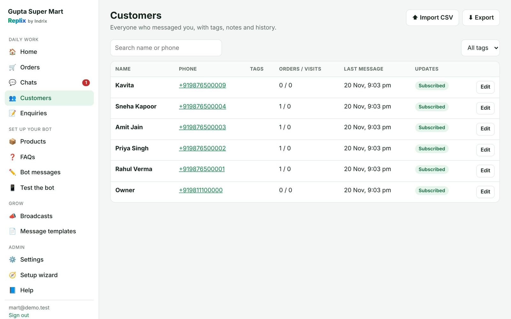
- Search by name or phone, filter by tag (tags are added automatically from what people book, and you can add your own like vip, wholesale).
- Edit: name, tags, address, private notes.
- Receives reminders & updates – turned off when a customer sends STOP.
- Agreed to receive offers – switch on only if the customer agreed. Needed for broadcasts.
- Delete data – when a customer asks you to delete their information.
- Import CSV – bring your old customers or patients from Excel. If you include their last visit date and service, the "your next visit is due" reminders are scheduled automatically.
13. Enquiries
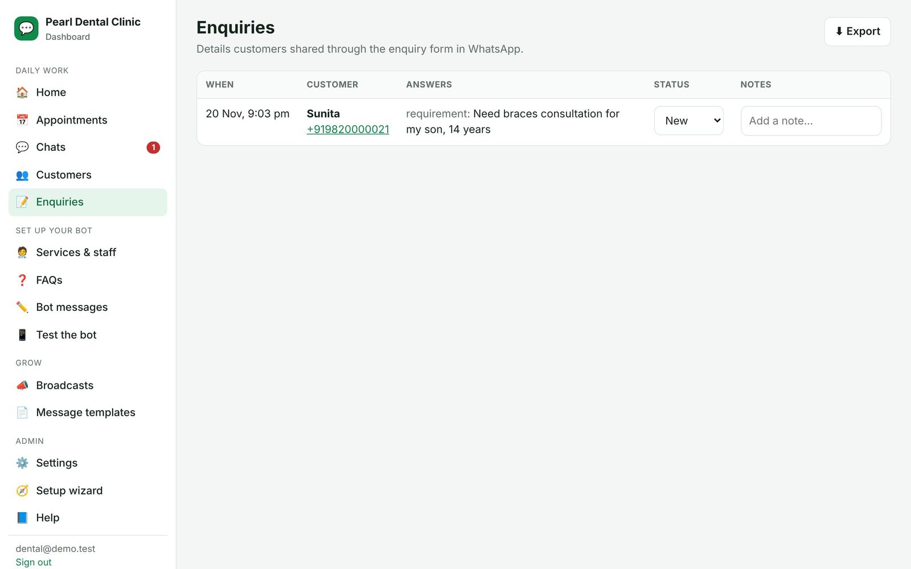
Change each enquiry's status (New → Contacted → Won / Lost), add notes, and export to Excel. Change the questions in Settings → Enquiry form.
14. Products
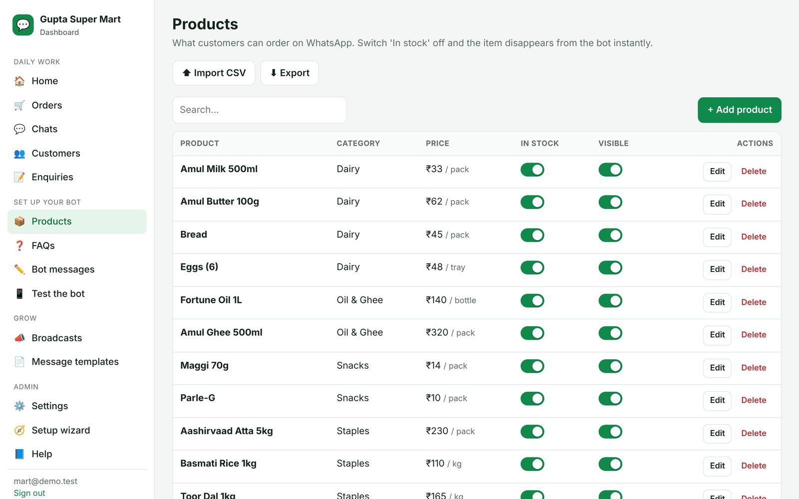
- + Add product: name (short – WhatsApp shows about 24 letters), price, category, unit (kg, pack, plate…), description, optional photo link.
- In stock – turn off whenever something runs out. Visible – hide without deleting.
- Import CSV – make a sheet in Excel with columns
name, price, category, unit, description, in_stock, save as CSV, upload. Same names are updated, new ones added. - Export – download, edit prices in Excel, import back. Easiest way to update many prices.
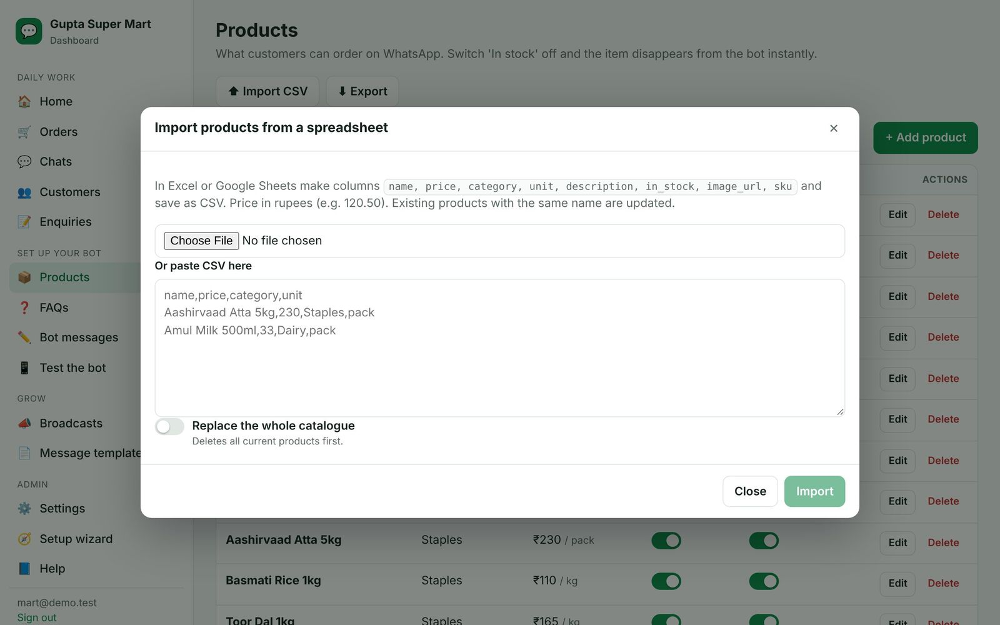
15. Services & staff
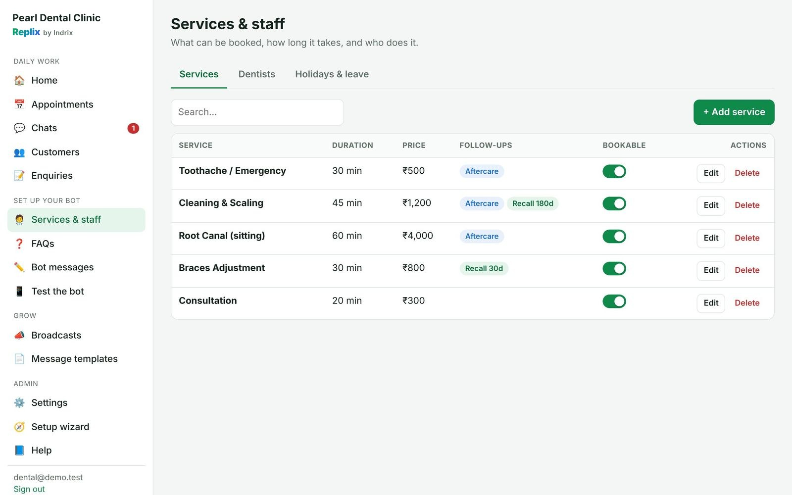
| Services tab | Name, duration, price, aftercare message (sent after the visit), recall after (days) – e.g. 180 for a 6-month cleaning, 30 for a monthly haircut. |
| Staff tab | Doctors / stylists / trainers: name, title, WhatsApp (gets an alert for each booking), which services they do, their own working hours if different. |
| Holidays & leave | Festival holidays for everyone, or one person's leave. No times are offered on those days. |
16. FAQs
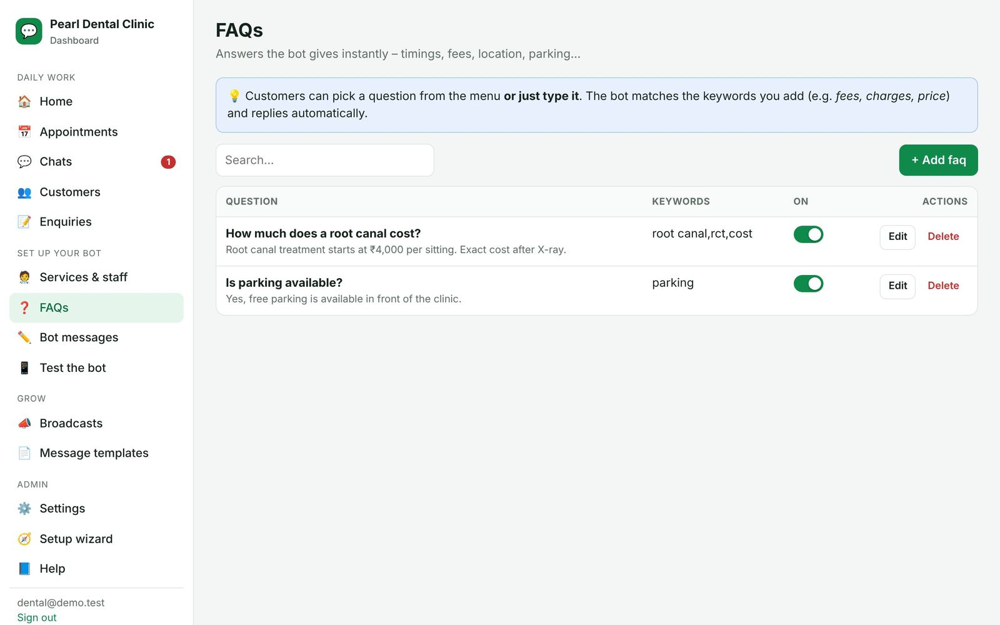
Add the 5–10 questions people ask you most. Keywords are the words that trigger the answer when a customer types a question – add how your customers really write, including Hindi/Hinglish: fees, charges, price, kitna.
17. Bot messages – change what the bot says
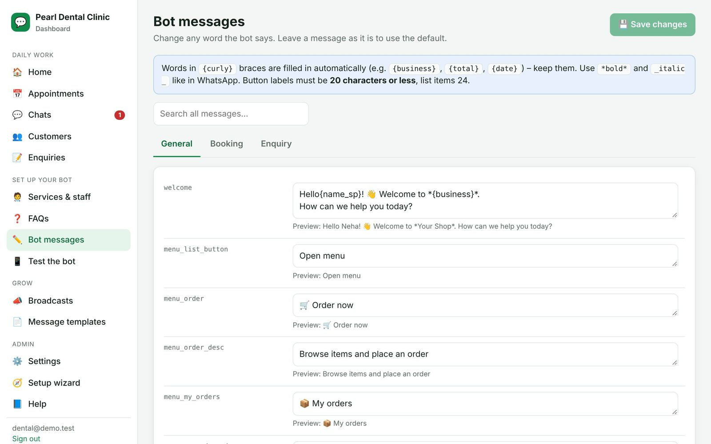
- Tabs: General, Ordering, Booking, Enquiry – or Search all messages.
- Keep words in
{curly braces}– they are filled in automatically (business name, total, date, time…). - Button labels must be 20 characters or less – a red warning appears if too long.
- Use WhatsApp style:
*bold*,_italic_, emojis. Reset brings back the original.
18. AI assistant – answers from your information
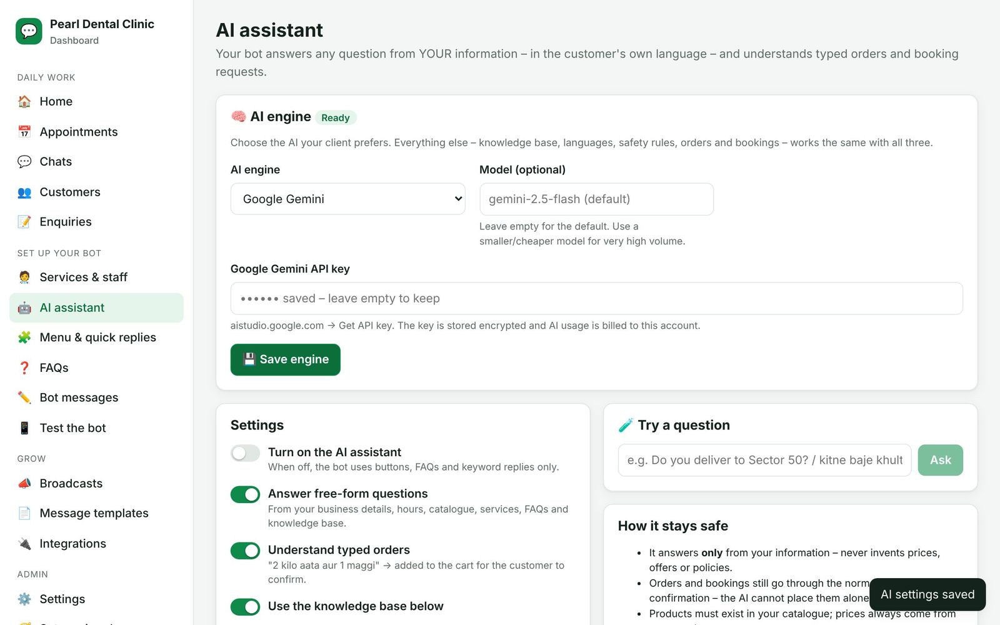
Turn on the AI assistant and your bot can answer any question your customers ask – "do you deliver to Sector 50?", "kitne baje khulte ho?", "રૂટ કેનાલનો ખર્ચ કેટલો?" – using only your information. It also understands typed orders ("2 kilo aata aur 1 maggi" goes into the cart for the customer to confirm) and booking requests ("haircut tomorrow evening" starts the booking).
| AI engine | Choose Claude, OpenAI (ChatGPT) or Google Gemini, paste your API key and save – the badge turns Ready. Everything else works the same with all three; you can switch anytime. |
| Knowledge base | + Add knowledge: paste text, upload a PDF/TXT/CSV (price list, menu, brochure), or import a page of your website. Switch a source off when it's outdated, or edit it. |
| Try a question | Type what a customer might ask and see the exact answer before customers do. If it says "could not answer", add that information. |
| Tone & name | Friendly, formal or very short; give your assistant a name ("Riya from Pearl Dental"). |
| Extra instructions | Rules in your words: "Always mention free delivery above ₹300", "Recommend the family pack for 4+ people". |
| Safety | It never invents prices or offers, orders and bookings still need the customer's confirmation, and complaints or medical/legal questions go to your team. |
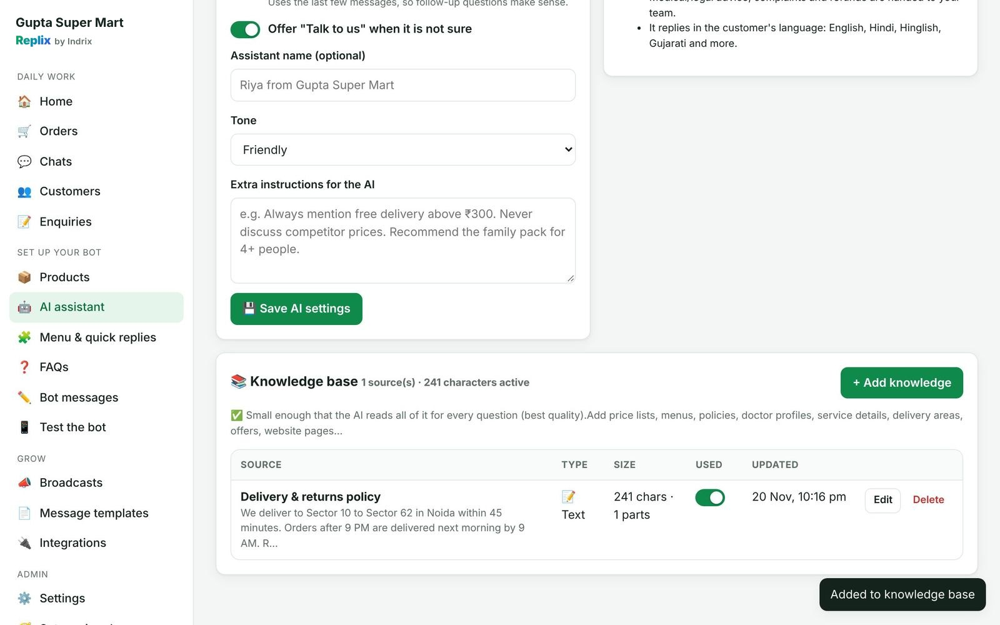
19. Menu & quick replies – your own buttons
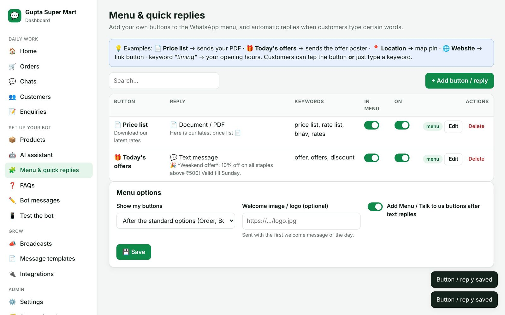
Add buttons to your WhatsApp menu, and automatic replies when customers type certain words – no code. Each button can send:
💬 Text
Timings, offers, directions, terms.
📄 PDF / document
Price list, menu card, brochure.
🖼️ Image
Offer poster, today's menu photo.
🔗 Link button
Website, Google form, payment page, Instagram.
📍 Location
A map pin of your shop or clinic.
➡️ Start a flow
Ordering, booking, enquiry form, talk to us.
Keywords: customers don't even need to tap – if someone types "rate list" or "bhav", the Price list reply is sent automatically. Add a welcome image or logo in Menu options.
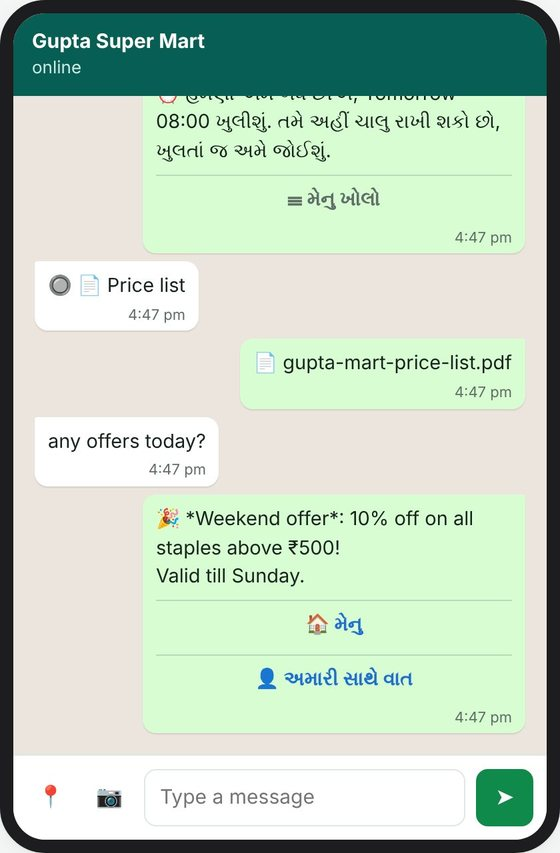
20. Integrations – Google Sheets & CRM
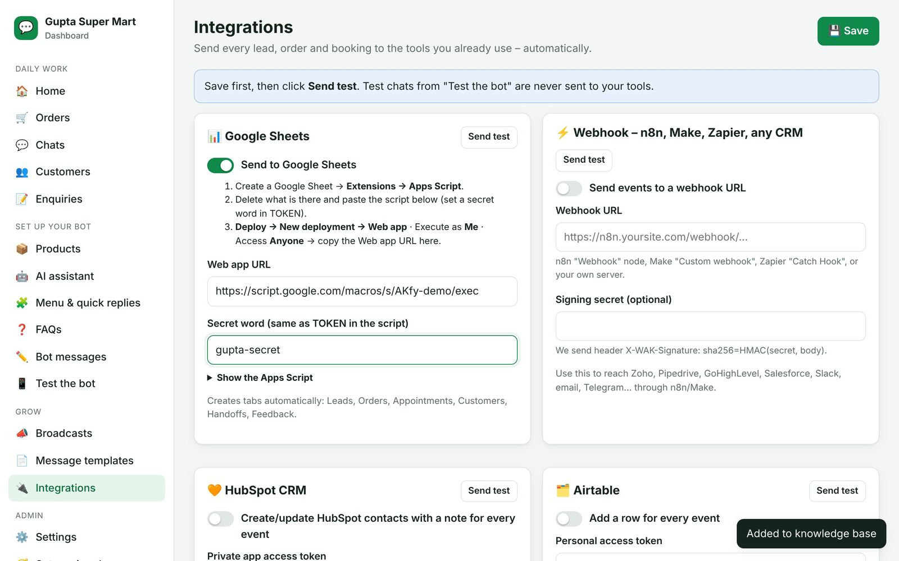
- Google Sheets: follow the 3 steps on the page (paste the script, deploy, paste the link). New leads, orders, bookings, handoffs and feedback appear in separate tabs automatically.
- HubSpot and Airtable: paste your token – contacts and notes / rows are created for you.
- Webhook: connect Zoho, Pipedrive, GoHighLevel, Slack, email and hundreds more through n8n, Make or Zapier.
- Choose which events to send, Save, then Send test. The Delivery log shows every send; failed sends are retried automatically.
21. Languages – Hindi, Gujarati and more
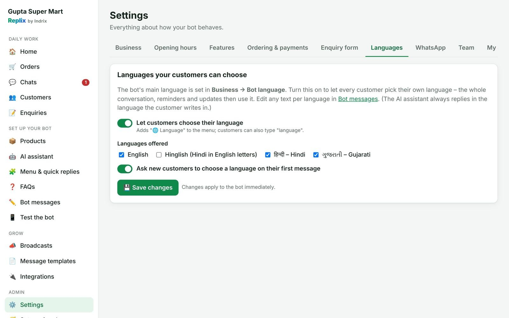
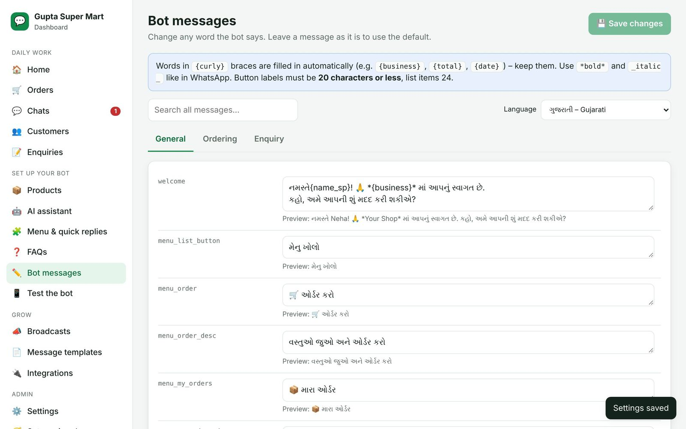
- Settings → Business → Bot language: your main language (English, Hinglish, हिन्दी, ગુજરાતી).
- Settings → Languages: let every customer choose their own language – they are asked on their first "Hi" and can type language anytime. Reminders, order updates and aftercare then come in their language.
- Bot messages: pick a language at the top and change any sentence.
- The AI assistant always answers in the language the customer writes in.
22. Broadcasts – offers and announcements
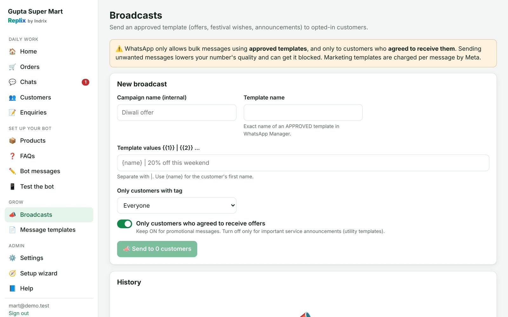
- Choose an approved template (your setup person creates it in WhatsApp).
- Fill the values; use
{name}for the customer's first name. - Choose everyone or a tag (e.g. dental, vip). Keep "Only customers who agreed to receive offers" ON.
- Click Send. Progress shows in History.
23. Message templates
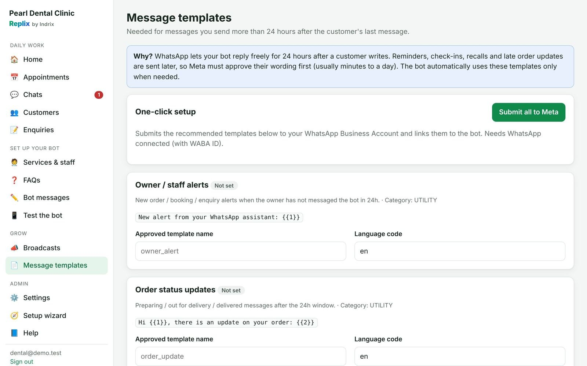
Clicking Submit all to Meta once creates five templates: owner alerts, order updates, appointment reminders, after-visit check-in and next-visit reminder. When they show Approved, the assistant uses them automatically whenever the 24-hour window has closed.
24. Settings
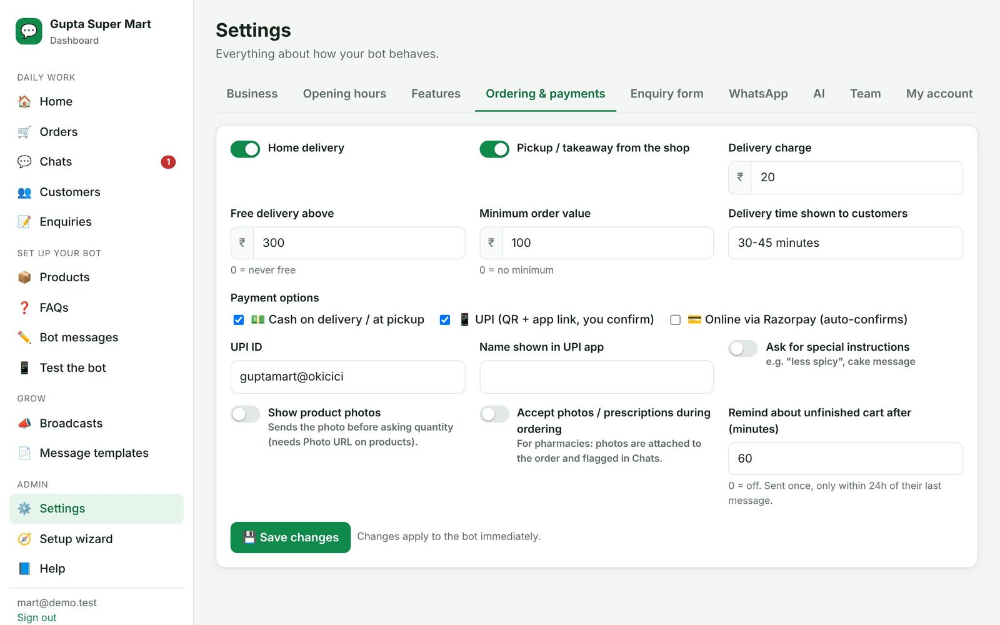
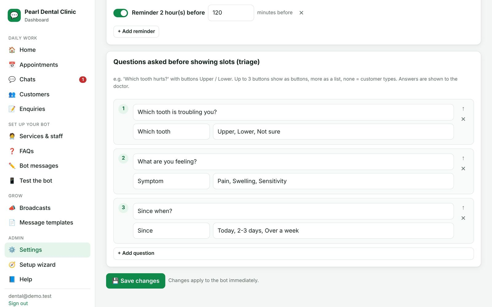
| Tab | What you can change |
|---|---|
| Business | Name, owner WhatsApp (alerts), public number, address, Maps link, Google review link, about, language, time zone. |
| Opening hours | Weekly hours with breaks; when closed: keep working and say when you open, or only collect messages for your team. |
| Features | Turn Ordering / Appointments / FAQs & enquiries on or off; menu style; how long the bot stays quiet after "talk to us"; alerts. |
| Ordering & payments | Delivery, pickup, delivery charge, free delivery above, minimum order, delivery time, payment options (cash, UPI, Razorpay, Stripe card payments for international customers, any payment link like PayPal.me), special instructions, product photos, prescriptions, unfinished-cart reminder. |
| Languages | Let customers choose English, Hinglish, हिन्दी or ગુજરાતી; ask new customers first. |
| Appointments | Staff name (Doctor, Stylist…), slot gap, days ahead, minimum notice, staff choice, ask for name, check-in day, review request, reminders, triage questions. |
| Enquiry form | The questions asked when someone taps "Send enquiry". |
| Connection (usually done by your setup person), test message. | |
| Team / My account | Staff logins (Staff = daily work only, Owner = everything); change your password. |
Click 💾 Save changes – the bot uses the new settings immediately.
25. For agencies: managing many businesses
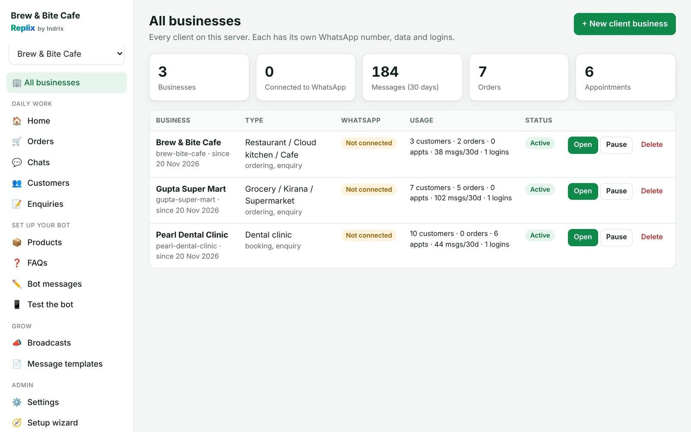
Agency administrators see All businesses, can create a new client in 30 seconds (+ New client business → type, owner login, example data), open any business, and pause or delete it. Each business has its own WhatsApp number, data and logins.
Playbooks for your business
How the assistant works in real life for clinics, marts, cafes and more – the full journey, every likely situation, and the results to watch.
26. Clinic & dental clinic
Clinics rarely lose patients because of treatment. They lose them in the gaps: a message nobody answered at 11 pm, a patient who forgot the appointment, a happy patient who was never asked for a review. Your assistant closes every gap.
Neha's toothache – the full journey
Set it up (about 1 hour)
- Business type Clinic or Dental clinic in the setup wizard
- Services with duration, price, aftercare message and recall days (cleaning 180, braces 30, check-up 365)
- Doctors with their own hours and the services they do; holidays and leave
- Triage questions in Settings → Appointments (e.g. Which tooth? Swelling? Since when?)
- Google review link in Settings → Business; reminders 1 day + 2 hours; check-in after 3 days
- FAQs: fees, timings, parking, insurance, location
- Import old patients with last visit dates so recalls start immediately
Every situation and what happens
| Situation | What the assistant does | What you do |
|---|---|---|
| A patient in pain writes at midnight | Replies instantly, asks your triage questions, offers the first free slots. | Nothing – the booking is waiting in the morning. |
| Patient wants a specific doctor | Shows the doctor list (or "Any available"). | Turn "Let customers choose" on/off in Settings → Appointments. |
| Doctor on leave next week | Offers no slots with that doctor on those days. | Add the leave in Services & staff → Holidays & leave. |
| Patient can't come | They tap Reschedule or Cancel in the reminder; you are alerted for cancellations. | Nothing. |
| Patient doesn't show up | – | Tap No-show. Follow-ups stop; it counts in your no-show number. |
| Patient calls or walks in | – | + New appointment – they still get confirmation and reminders on WhatsApp. |
| Booking for a family member | Asks "Who is this appointment for?" – the name can differ from the WhatsApp name. | Nothing. |
| Serious symptoms / emergency question | "Talk to us" hands the chat to your team; the bot pauses. | Reply or call from Chats immediately. |
| Patient asks "what are the fees?" | Answers from your FAQ (typed questions are matched by keywords). | Keep FAQs updated. |
| Patient sends an X-ray photo or report | Says "received", alerts you, flags the chat. | Open it in Chats (📎) and reply. |
| Pain continues after treatment | The check-in catches it: 😟 → alert to you, chat flagged, no review request. | Call the patient. |
| Follow-up visit needed (root canal 2nd sitting, braces) | Recall message after the days you set on the service. | Set recall days on the service. |
| Clinic closed on Sunday | Still books for the next open day and tells the patient when you open. | Or choose "only collect messages" when closed. |
| A patient asks in Gujarati about insurance | With the AI assistant and your policy document, it answers in Gujarati. | Add your policies to the knowledge base. |
| Leads should go to your Google Sheet | Every booking and enquiry is added as a row automatically. | Set up Integrations once. |
| Two patients tap the same time together | Only one gets it; the other is offered fresh times. Double booking is impossible. | Nothing. |
Results to watch every month
⏱️ Response time
Now seconds, 24×7 – compare with before.
📉 No-show rate
Home → "No-shows (30 days)" vs visits completed.
⭐ New Google reviews
Count in your Google Business Profile.
27. Mart, kirana & supermarket
Customers order on WhatsApp in under a minute, you get one clean list instead of a chaotic chat inbox, and regular customers reorder with one tap.
Rahul's evening order
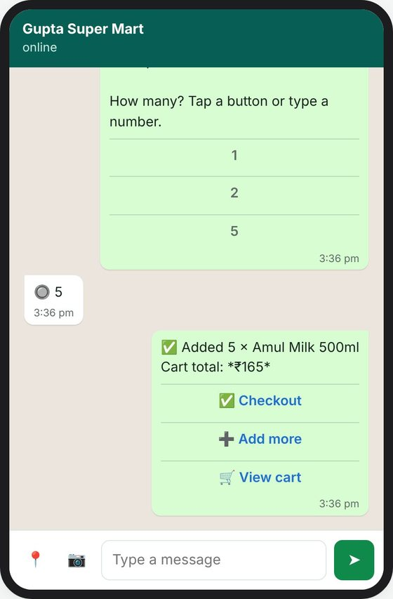
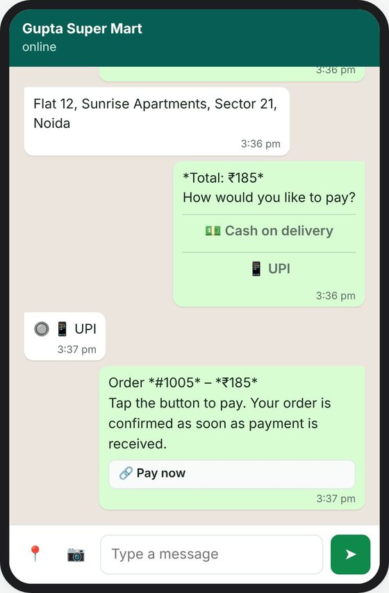
Set it up (about 1 hour)
- Business type Grocery / Kirana / Supermarket
- Import your top 50–100 products from Excel (name, price, category, unit)
- Delivery charge, free delivery above, minimum order, pickup on/off
- Payment: cash on delivery, UPI ID, (optional) Razorpay
- FAQs: delivery area, timings, return policy
- Print the QR on bills and carry bags
Every situation and what happens
| Situation | What the assistant does | What you do |
|---|---|---|
| An item runs out | Disappears from WhatsApp; if already in someone's cart it is removed politely at checkout. | Switch off In stock (takes 2 seconds). |
| Prices change | Carts are re-priced at checkout – customers always pay today's price. | Update prices (or Export → edit in Excel → Import). |
| Order below minimum | "Minimum order value is ₹100. Please add a little more 🙂" | Set the minimum in Settings. |
| Customer types "2 kg atta 1 oil" | Searches your products. With AI on, adds the items to the cart for confirmation. | Optional: turn on AI in Settings. |
| Customer sends a photo of a handwritten list | With "Accept photos" on, it is attached and the chat is flagged. | Read it in Chats and reply. |
| Regular customer wants the same as last week | "📦 My orders" → 🔁 Reorder last fills the cart. | Nothing. |
| Customer left items in the cart | One friendly reminder after the time you set. | Nothing. |
| Paid by UPI | Order waits as "New". | Check bank app → Payment received. |
| Customer wants to add an item after ordering | – | Reply in Chats; or cancel with reason "please reorder with all items". |
| Wrong or new address | Asks "Deliver to this address?" every time – they can choose a new one or share 📍 location. | Nothing. |
| Delivery area question | Answers from your FAQ. | Add the FAQ with keywords (area, deliver, sector…). |
| Order at 11 pm (shop closed) | Takes the order and says when you open (or only collects the message – your choice). | Process it in the morning. |
| Customer asks for your price list | Your "📄 Price list" button sends the PDF; typing "rate list" or "bhav" works too. | Add it once in Menu & quick replies. |
| Customer asks "do you have Basmati rice 5kg?" | With AI on, answers from your catalogue with the price and an Order button. | Keep stock switches correct. |
| Festival offer | An "🎁 Offers" button always shows the current offer; or broadcast to customers who agreed. | Update the Offers button text / poster. |
| Wholesale / bulk enquiry | Enquiry form collects details and alerts you. | Call them back. |
Results to watch
🛒 Orders per day
Home → Orders today & 7-day chart.
🔁 Repeat customers
Customers page → orders count.
📱 UPI share
Export orders → payment mode.
28. Cafe & restaurant
Direct orders without aggregator commission, order-ahead for takeaway, and even table booking – all on WhatsApp.
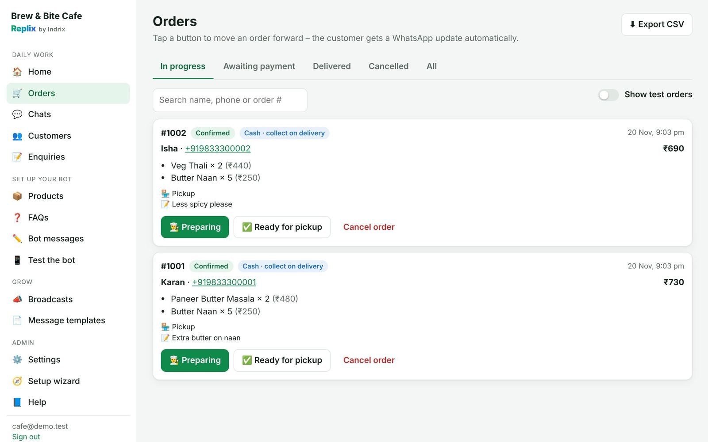
How a day works
Set it up
- Business type Restaurant / Cloud kitchen / Cafe; menu as products (categories: Starters, Main course, Breads, Drinks…)
- Delivery and/or takeaway, delivery charge, delivery time text ("35-45 minutes")
- Settings → Ordering → Ask for special instructions ON (spice level, no onion)
- Table booking: Settings → Features → Appointments ON; Services "Table for 2" (60 min), "Table for 4" (90 min); Staff = your tables ("Table 1", "Table 2"…), with "let customers choose" OFF – the bot gives the first free table
- Razorpay for online payment if you want prepaid orders
Every situation and what happens
| Situation | What the assistant does | What you do |
|---|---|---|
| A dish is finished for today | Disappears from the menu. | Switch off In stock; switch on tomorrow. |
| Rush hour – longer wait | Shows your delivery time text. | Change "Delivery time shown to customers" to "60 minutes". |
| Today's special | Shows in its own category, or a "📸 Today's menu" button sends the photo. | Add a product in category "Today's special", or update the button image. |
| Tourist orders in English, regular in Hindi | Each customer picks their language; the AI answers in theirs. | Turn on Settings → Languages. |
| "Less spicy", "no onion" | Saved with the order as notes. | Read it on the order card. |
| Party / catering order | Enquiry form (guests, date, budget) → alert to you. | Call with a custom menu. |
| Orders after closing time | Says when you open, or only collects messages. | Choose in Settings → Opening hours. |
| All tables booked at 8 pm | Offers other free times only. | Nothing. |
| Guest wants to talk | "Talk to us" → chat flagged, bot pauses. | Reply from Chats. |
29. Pharmacy & medical store
- Customers send a prescription photo while ordering (Settings → Ordering → Accept photos / prescriptions). It is attached to the order and the chat is flagged so your pharmacist checks it.
- Regular medicines: Reorder last in one tap every month.
- FAQs: "Do you deliver at night?", "Generic available?", "Home delivery charges".
- Prescription-only and restricted medicines have extra WhatsApp/legal rules – always confirm the prescription before dispatch.
30. Salon, spa & beauty parlour
- Service menu with prices and durations; customers choose their stylist or "any available".
- Reminders cut no-shows; recall brings customers back (haircut 30 days, facial 30, colour 45).
- Walk-ins: add them with + New appointment so the calendar stays correct.
- Packages and bridal enquiries through the enquiry form.
- Hinglish texts feel personal: "Aapki appointment kal 4 baje hai".
31. Gym, yoga & classes
- Free trial class booking turns enquiries into visits.
- Lead form: goal (weight loss / muscle gain), preferred time – trainer calls them.
- FAQs: membership plans, timings, personal training fees.
- Renewal reminders: set a recall on the membership service (e.g. 30 days) or broadcast a renewal template to members.
32. Coaching centre, tuition & school
- Admission enquiry form: student name, class/course, offline/online – parents fill it at night, you call next morning.
- Free demo class / counselling booking with reminders.
- FAQs: batch timings, fees, location, study material.
- Announcements (holidays, exam dates) via broadcast to parents who agreed.
33. Home services & repair (AC, plumber, electrician, cleaning)
- Customers book a visit slot; triage questions collect the address and the problem before booking.
- Technician teams as staff; customers don't need to choose.
- AMC / service reminders with recall days (AC service every 180 days).
- Inspection/visit charge explained in FAQs; job updates through Chats.
34. Real estate & other lead-based businesses
- Lead form qualifies buyers: buy/rent, property type, budget, location – your team only calls serious leads.
- Site visit booking with reminders and the map link.
- Same pattern works for interior designers, travel agents, insurance, CA/tax consultants, lawyers, wedding planners.
35. Many more businesses – quick guide
| Business | Start with | Key idea |
|---|---|---|
| Bakery / cake shop | Bakery | Cake orders with "message on cake" in special instructions |
| Milk booth, water cans, gas cylinders | Grocery | Repeat orders with one-tap reorder |
| Laundry / dry cleaning | Home services | Pickup slot booking + price list as products |
| Diagnostic / pathology lab | Clinic | Test booking, home-sample address as a triage question |
| Veterinary clinic / pet grooming | Clinic / Salon | Vaccination recall every 365 days |
| Optical store | Clinic + Ordering | Eye test booking + frames catalogue |
| Car / bike service, car wash | Home services | Service booking + recall every 90–180 days |
| Boutique / tailor | Salon | Measurement visit and trial/pickup appointments |
| Mobile repair | Home services | Model + problem questions before booking |
| Library / reading room | Coaching | Seat booking per shift, monthly renewal recall |
| Housing society, temple, community trust | Other | FAQs, notices to members who agreed, complaint/enquiry form |
Your setup person has a list of 100 business types with the right settings for each.
Running it well
Your routine, answers to "what if…", WhatsApp's rules in simple words, and a glossary.
36. Your routine
☀️ Every day (5 minutes)
- Open the dashboard, click once to enable sound.
- Clear Chats → Waiting for reply.
- Move orders forward / tap Visit done after each visit.
- Switch off In stock for anything that ran out.
📅 Every week
- Look at Home: orders, no-shows, new customers.
- Read a few chats – where did people get stuck? Improve FAQs and bot messages.
- Add FAQs for questions people keep asking.
🗓️ Every month
- Review prices, services, staff hours.
- Import new customers or patients.
- At most one useful broadcast to customers who agreed.
37. What if…
| What if… | Why it happens | What to do |
|---|---|---|
| A customer says the bot isn't replying | Usually the chat is paused because someone asked for a person. | Chats → open the chat → ▶ Hand back to bot. The customer can also type menu. |
| Nobody gets replies | WhatsApp connection or server problem. | Settings → WhatsApp → Test connection; call your setup person. |
| I'm not getting WhatsApp alerts | Owner number wrong, or more than 24 hours since you last messaged the bot and no template. | Check Settings → Business → owner number; send "Hi" to your bot; ask for templates to be approved. |
| A message shows ⚠️ "24h window closed" | WhatsApp rule. | Templates (section 23). For chats: wait until the customer writes again, or call. |
| Customer paid by UPI but the order says New | UPI is confirmed by you. | Check the bank app → Payment received. |
| Customer wants to change an order | Orders can't be edited after placing. | Reply in Chats, or cancel with a reason and ask them to reorder. |
| I need a day off | – | Services & staff → Holidays & leave; or change Opening hours. |
| The bot says we're closed when we're open | Opening hours or time zone wrong. | Settings → Opening hours; Settings → Business → Time zone. |
| "No slots available" for customers | Closed day, leave, fully booked, or staff not linked to the service. | Check hours, leave, and Services & staff → staff → services ticked. |
| A customer typed STOP by mistake | They are unsubscribed from reminders. | They send START, or Customers → Edit → switch "Receives reminders & updates" on. |
| A customer wants their data deleted | Privacy right. | Customers → Edit → Delete data. |
| Button text is cut with "…" | WhatsApp limit 20 letters. | Shorten it in Bot messages / product name. |
| I want the bot to speak Hindi / Hinglish | – | Settings → Business → Bot language → Hinglish; edit any sentence in Bot messages (Hindi script works too). |
| A new staff member joins | – | Settings → Team → Add (Staff role). For bookings also add them in Services & staff. |
| Someone leaves the team | – | Settings → Team → Delete their login. |
| We changed our phone number | The bot number is connected in WhatsApp's systems. | Ask your setup person; then reprint the QR from Home. |
| I can't hear the order beep | Browsers block sound until you click. | Click once on the dashboard; check computer volume. |
| Two people booked the same time? | Not possible for the same staff member. | Check the staff column – they're with different people. |
| The AI gave a wrong answer | Its information is old or missing. | AI assistant → edit/disable the source or add the right fact; check with "Try a question". |
| Leads are not appearing in my Google Sheet | Sheet link or secret word changed. | Integrations → Send test, read the Delivery log; ask your setup person to redeploy the script. |
| I want a "Price list" button | – | Menu & quick replies → Add → Document → your PDF link. |
| Is my data safe? | – | Passwords and WhatsApp keys are encrypted; each business sees only its own data; ask your setup person about daily backups. |
38. WhatsApp's rules in simple words
- Separate number. The bot's number can't be used on the normal WhatsApp app at the same time.
- 24 hours. Free replies only within 24 hours of the customer's last message; later only approved templates.
- Consent. Send offers only to people who agreed. STOP is always respected automatically.
- Quality. Blocks and reports lower your number's quality; low quality limits your messages.
- Restricted products. Medicines, alcohol, tobacco and some others have extra rules.
- Costs. WhatsApp charges per template message (marketing is the most expensive). Your setup person can tell you current rates.
39. Glossary
| Dashboard | The website where you manage your assistant. |
| Bot / assistant | The automatic replies on your WhatsApp number. |
| Template | A message pre-approved by WhatsApp, needed after 24 hours (reminders, updates). |
| 24-hour window | The time after a customer's last message when you can send any message. |
| Handoff / bot paused | The bot stays quiet in one chat so a person can reply. |
| Triage questions | Questions asked before booking (e.g. "Which tooth?") – answers show on the appointment. |
| Aftercare | Care instructions sent automatically after a visit. |
| Check-in | "How are you feeling?" message a few days after a visit. |
| Recall | "Your next visit is due" message after the days you set on a service. |
| Broadcast | One approved message sent to many customers who agreed. |
| Opted in / out | Whether a customer agreed to receive messages (STOP = out, START = in). |
| Tag | A label on a customer (e.g. vip, dental) used for filtering and broadcasts. |
| Knowledge base | Your documents and website pages the AI answers from. |
| Quick reply | Your own button or keyword with a fixed reply (text, PDF, image, link, location). |
| Integration | An automatic connection that copies leads/orders/bookings to Google Sheets or your CRM. |
| QR code / chat link | Opens a WhatsApp chat with your business with "Hi" already typed. |